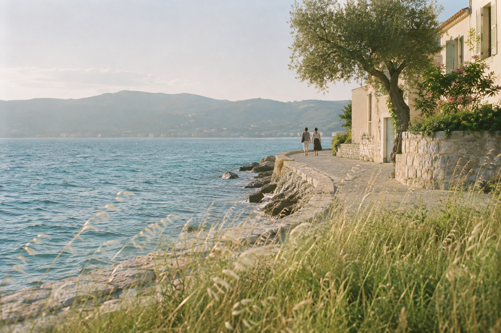

LIVE / 实况与短视频
把前后的瞬间，一起留下。
在支持的 iPhone 上拍摄原生实况，照片与动态一起处理。也能录制或导入最长 60 秒的短视频，保留原有声音。
动态预览静音播放，保存时保留音轨。
SUMI CAMERA / 为日常留一卷
散步、旅行，或只是一个有阳光的下午。
用一卷胶片记下它，延续喜欢的光色，
也留下快门前后的瞬间。
iPhone · iOS 16 及以上 · 免费下载

A LITTLE LIGHT. A LASTING MEMORY.
不必等到特别的日子。
平常的一刻，也值得好好记下。
打开苏米，实际这样用
拍摄、归卷、留配方，再到暗房调整。
切换下面的步骤，看看每一步的真实界面。

在相机页挑选胶片，滑动调整浓度，再按下快门。照片、实况和短视频，都从这里开始。
操作路径：相机 → 胶片 / 轻颜 / 调整 → 快门
在自己的 iPhone 上体验六款胶片，六种心情
清透、温暖、褪色，或只留下黑白。
选一款看看，同一刻也有不同的表达。

PICK YOUR FILM
冷青暗部，温柔肤色。适合街角与咖啡馆。
AI 摄影素材，使用 App 同源胶片处理流程生成预览；拍摄环境与调整参数会影响最终效果。
不止一张好看的照片
LIVE / 实况与短视频
在支持的 iPhone 上拍摄原生实况，照片与动态一起处理。也能录制或导入最长 60 秒的短视频，保留原有声音。
动态预览静音播放，保存时保留音轨。
NATURAL / 自然轻颜
轻颜默认关闭，需要时再开启。温和柔化与提亮面部，保护眼、眉与唇；前置屏幕补光可调整暖度和亮度。
不改变五官与脸型，不提供妆容或美型。
ORIGINALS / 原片保留
原片和成片留在 App 中。暗房从原片重新调整，保存独立副本；喜欢的作品可以收藏，移除后也能在最近删除中找回。
删除 App 会清除本地作品，请先导出。
先保存到 iPhone 系统相册，再从支持实况的应用中导入。通过系统分享可发送照片或动态视频；实况能否播放取决于接收应用的支持情况。
保存胶片、浓度、光色、颗粒、柔光、暗角、轻颜与画幅。选择这卷续拍时可恢复配方。临时拍摄调整不会自动改写配方，更新配方也不会改变已有作品。
需要 iOS 16 或更新版本。实况、镜头与闪光能力依设备而定。当前不支持 RAW、HDR 视频、4K 或手动快门 / ISO，也不提供视频剪辑时间轴与实况关键帧选择。
拍摄、滤镜、轻颜与导出均在本机完成。含统计功能的版本仅在你同意后开启友盟使用统计，拒绝不影响核心功能，也可随时在设置中关闭。
完整隐私政策 / Privacy Policy